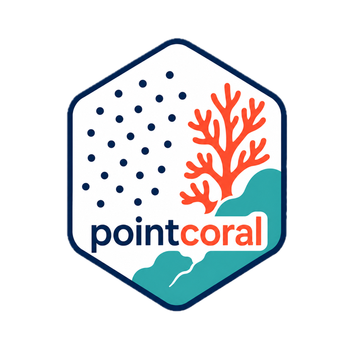

Summarize point counts and percent cover
summarize_points.RdCounts point labels by grouping variables and returns percent cover within each group.
Usage
summarize_points(
points,
by = c("site", "transect", "image_id"),
class_col = "major_category"
)Examples
cpc <- system.file("extdata", "HIW_158_W_U-1.cpc", package = "pointcoral")
pts <- read_cpce_file(cpc)
summarize_points(pts, by = "image_id", class_col = "raw_label")
#> # A tibble: 10 × 5
#> image_id raw_label n n_points percent
#> <chr> <chr> <int> <int> <dbl>
#> 1 HIW_158_W_U-1 AA 4 100 4
#> 2 HIW_158_W_U-1 CALG 18 100 18
#> 3 HIW_158_W_U-1 LOBO 8 100 8
#> 4 HIW_158_W_U-1 P 2 100 2
#> 5 HIW_158_W_U-1 PEFL 7 100 7
#> 6 HIW_158_W_U-1 PEYS 9 100 9
#> 7 HIW_158_W_U-1 S 21 100 21
#> 8 HIW_158_W_U-1 SPO 27 100 27
#> 9 HIW_158_W_U-1 SS 1 100 1
#> 10 HIW_158_W_U-1 TURF 3 100 3